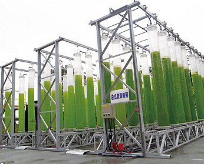

二氧化碳捕獲
二氧化碳捕獲封存與再利用技術（Carbon Capture, Storage and Utilization）
台泥身為水泥產業的領導者，在面對氣候變遷對環境的因應策略，除進行節約能源措施，致力於工廠溫室氣體減量外，尚持續進行再利用資源取代原始原料以尊重環境資源，積極參與工研院鈣廻路捕獲二氧化碳技術發展的計畫。2011年7月簽訂「鈣迴路碳捕捉先導型系統技術合作研究」合約，進一步於同年11月簽訂「二氧化碳捕獲與封存技術商業化運轉」合作意向書。此一技術除獲得工研院2014年傑出研究金牌獎，同時亦獲得「2014年全球百大科技研發獎（2014 R&D 100 Awards）」的國際大獎肯定，此獎項素有「產業創新奧斯卡獎（The Oscars of Invention- The Chicago Tribune）」的美名。
本技術在經濟部CCS研發聯盟的架構下，將結合我國水泥、發電、石化、鋼鐵、工程與工程顧問公司、機械化工製造業等籌組產業聯盟，來帶領國內相關產業開創新興產業。目標市場以發電與水泥業為首要，石化與鋼鐵業為次要，參與國際示範計畫，以掌握世界趨勢與商機。以中國與東南亞為境外實施的主要市場，透過台商與當地產業鏈結。
研發時程進展
台泥目前與工業技術研究院合作開發之「鈣迴路捕獲二氧化碳先導型系統技術」已進入技術驗證階段。此技術以石灰石做吸收劑，利用其吸收容量高且能耗低，失去活性的吸收劑還可再投入水泥製程做為原料，因此無事業廢棄物產生。2013年6月已於台泥和平廠區完成一座二氧化碳捕獲的試驗工廠，現階段以此試驗工廠收集相關實際操作數據，希望透過不斷優化於十年內達到量產階段。目前工研院連續106小時於一定條件下試運轉結果共可捕獲200噸案氧化碳，換算整體系統碳捕捉能力，約可捕獲和平廠2,000噸至5,000噸的二氧化碳排放量，後續將據此結果規劃捕捉量擴大之示範廠計畫，期能在2025年建立商業化之捕獲廠。台泥與工研院合作，已投入第五年技術研發，投資金額超過4,800萬元，研發進展如下表所彙整：
| 年度 | 研發進展 | 投入經費 |
|---|---|---|
| 2011 |
|
1,200萬元 |
| 2012 |
|
730萬元 |
| 2013 |
|
895萬元 |
| 2014 |
|
940萬元 |
| 2015 |
|
1,064萬元 |
研發成果
目前先導型試驗廠捕獲量可達每小時1公噸（目前全球最大規模的試運轉廠），捕獲效率可達90%以上。現階段每噸碳捕捉成本約45美元，仍無法商業化，但是透過台泥與工研院持續合作，繼續增加階段性投資，未來將有可能持續降低至具商業競爭力之成本。2015年研發成果如下：
- 完成引進風量600 - 2,000 nm3，CO2進口濃度12%及17.8%之捕獲效率測試；引進風量1,000 nm3，捕獲效率可達83% - 93%
- 二輪煅燒後CaO活性（轉化率）約43% - 51.5%，優於美國Dravo Lime樣品的42.1%
- 煅燒爐排氣CO2濃度可穩定在81% - 85%之間，最高可達86%。CO2已可順利液化，分析液化CO2純度值達99.991%
- 新世代鈣迴路捕獲系統之旋風式碳酸化爐、水合反應器與周邊設備細部設計及建置
- 完成煅燒爐純氧粉煤燃燒系統的P&ID設計，以降低燃料成本。30 MWt級鈣迴路捕獲示範系統相關設備計算及基本設計
- 2015年與工研院合作進行新世代之蒸汽水合與多階旋風塔鈣迴路捕獲系統建置，使系統捕捉效率及鍛燒效率更為提升，捕獲成本邁向另一階段
藻類養殖技術開發－戶外微藻固碳系統及高單價微藻培養研究
台泥繼「鈣迴路捕獲二氧化碳先導型試驗廠」後，於2012年9月再與工研院簽訂「戶外微藻固碳系統及高單價微藻培養研究」合作協議書，進一步由二氧化碳補捉，延伸至二氧化碳再利用之綠能技術研發。推動「模組化袋式光合反應系統及類植物工坊培養系統先導試驗廠」，該廠已於2013年底於花蓮和平完成建造，自2014、2015年起進行測試運轉，以類植物工坊方式培養含高單價物質微藻，且於2015年進行系統優化生產，相關蝦紅素產品以開發試製完成。歷年之研發進展如下：
2015年專注於高單價微藻生長之探討與試開發，下列為年度之研發成果：
註：上圖數據引用與工研院合作「戶外微藻固碳系統及高單價微藻培養研究」計畫之實驗數據
| 年度 | 研發進展 |
|---|---|
| 2012 |
|
| 2013 |
|
| 2014 |
|
| 2015 |
|
- 開發雨生紅球藻生長促進劑，可提高雨生紅球藻細胞增長量209%，促進蝦紅素產率提高95%。對於蝦紅素生產成本降低與效率提升皆有幫助。
- 針對蝦紅素萃取，採用高壓均質油相萃取法，針對採收雨生紅球藻進行分散、粉碎、乳化、破菌，再以橄欖油作為萃取溶劑取代有機溶劑萃取，最高可達90%萃取率。
- 蝦紅素化妝品試開發
- 針對高單價微藻產品的應用，本計畫已推展至具體的蝦紅素產品試製，目前正進行試製產品的安全性與功效性測試。
